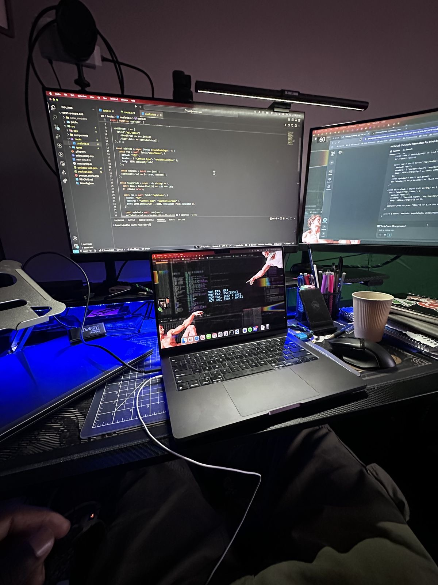

My Future Career in Cybersecurity
Why I Chose Cybersecurity
Cybersecurity interests me because technology is an important part of everyday life. Organizations depend on computers, networks, and data, which makes protecting those systems extremely important.
I enjoy learning how computer systems work and how security professionals identify vulnerabilities, protect networks, and respond to security threats.
Areas That Interest Me
- Network security
- Security operations
- System administration
- Cloud security
- Ethical hacking
- Incident response
Skills I Am Developing
Through my college courses and projects, I am developing skills in networking, Linux, Windows, programming, web development, virtual machines, and cybersecurity fundamentals.
Hands-on labs are especially useful because they allow me to apply concepts instead of only reading about them. I want to continue improving through additional projects, internships, and professional experience.
Cybersecurity Careers

Cybersecurity offers many different career paths. Some professionals monitor networks for threats, while others test systems for vulnerabilities, investigate security incidents, manage computer systems, or develop security policies.Careers I Would Consider
- Cybersecurity Analyst
- Security Operations Center Analyst
- Network Security Analyst
- Information Security Analyst
- Systems Administrator
- Cloud Security Specialist
My Future Goals
My short-term goal is to obtain an internship where I can work with experienced technology professionals and apply what I have learned in school to real-world situations.
My long-term goal is to build a successful career in cybersecurity and information technology. I want to continue learning as technology changes and eventually take on positions with greater responsibility.
Continuous Learning
Technology and cybersecurity continue to change, so learning does not stop after earning a degree. I plan to continue developing my skills through practical experience, certifications, independent learning, and professional development.